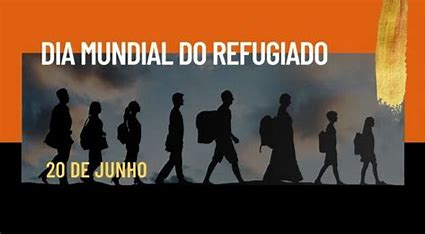

|  |

De todos os lugares pode haver refugiados,mas a grande maioria recentemente De onde vem os refugiados? Os 5,5 milhões de sírios que foram forçados a fugir constituem o maior grupo de refugiados do mundo. Os refugiados do Afeganistão aparecem em segundo lugar se considerado o país de origem.
A Turquia recebeu o maior número de refugiados – um total de 2,9 milhões, vindos principalmente da Síria. O país também abriga cerca de 30.400 refugiados do Iraque. As crises na África subsaariana tendem a forçar as pessoas a fugir para os países vizinhos e, como resultado, esta região continua a acolher um número cada vez maior de refugiados do Sudão do Sul, Somália, Sudão, República Democrática do Congo, República Centro-Africana, Eritréia e Burundi. O Paquistão acolheu a segunda maior população de refugiados no final de 2016: 1,4 milhão de pessoas vindas principalmente do Afeganistão. Esse número diminuiu ligeiramente devido aos refugiados que regressaram para casa. Cerca de um milhão de refugiados buscaram segurança no Líbano e 979.400 no Irã. Uganda vivenciou um aumento dramático da população de refugiados que saltou de 477.200 no final de 2015 para 940.800 no final de 2016. Esta população era constituída por pessoas vindas principalmente do Sudão do Sul (68%), mas também contava com números significativos de pessoas vindas da República Democrática do Congo, Burundi, Somália e Ruanda. Na verdade, Uganda registrou o maior número de novos refugiados em 2016. O número de refugiados também aumentou na Etiópia, Jordânia e República Democrática do Congo. Na Alemanha, a população de refugiados mais do que duplicou em 2016 e chegou a 669.500 pessoas. O principal motivo para esse aumento foi o reconhecimento de solicitações de refúgio apresentadas em 2015 principalmente por sírios.